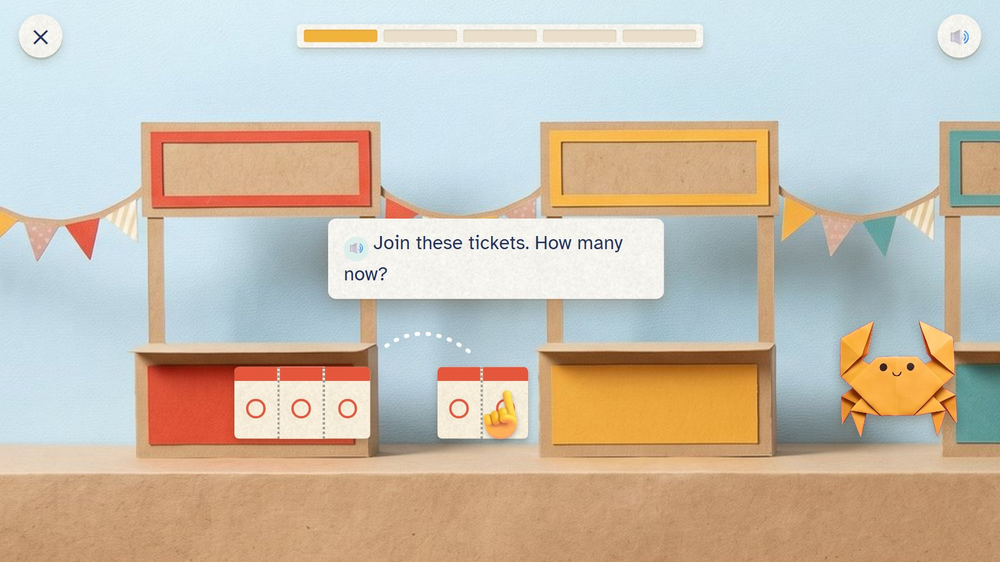
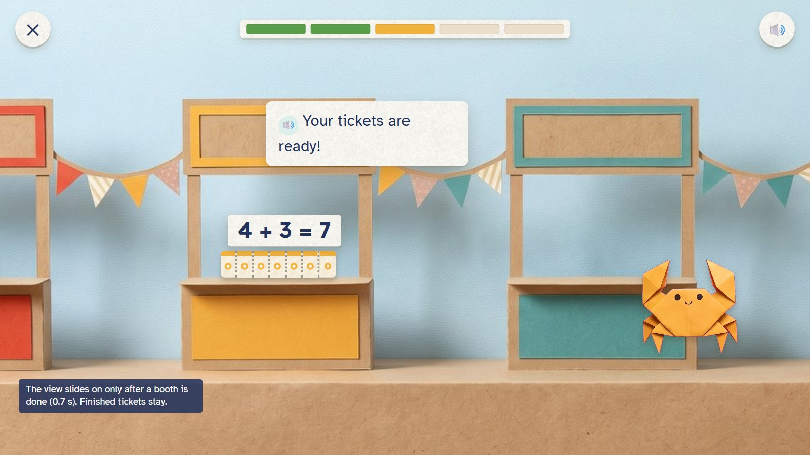
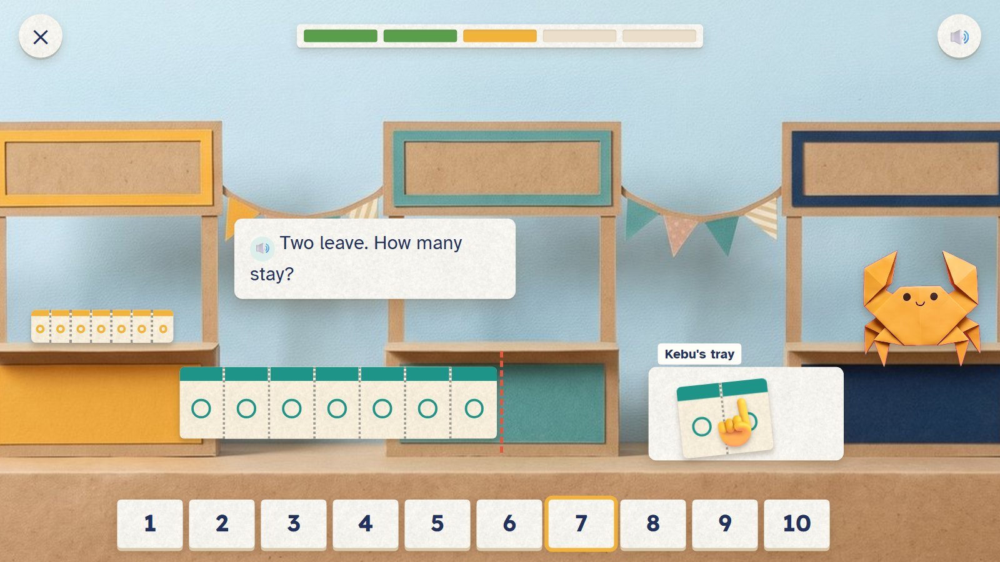
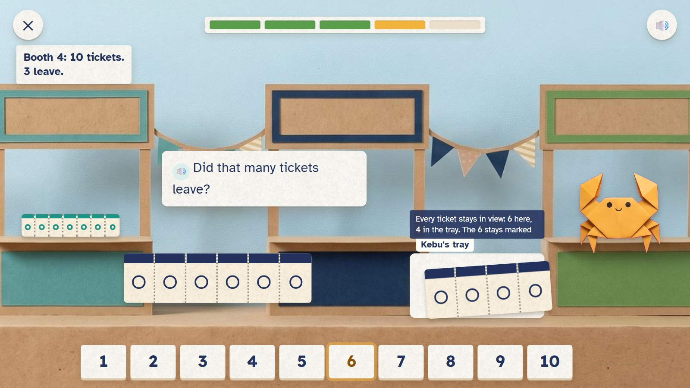
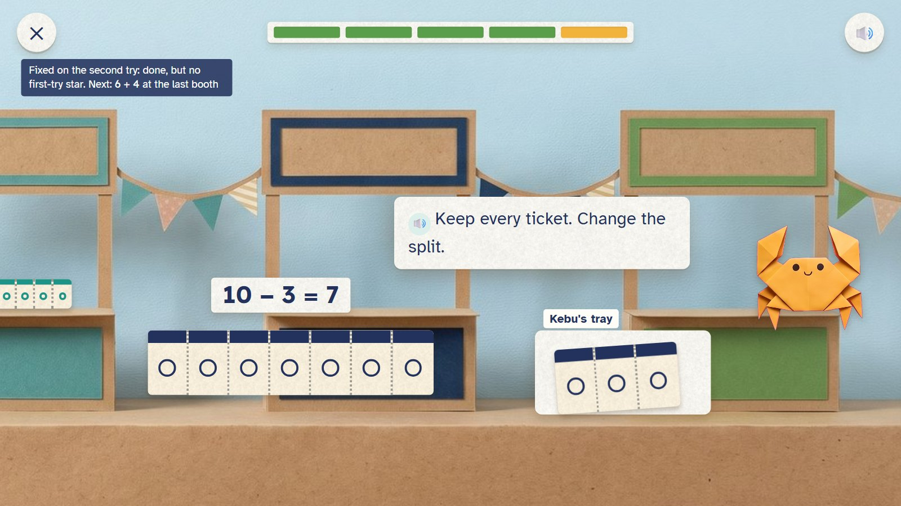
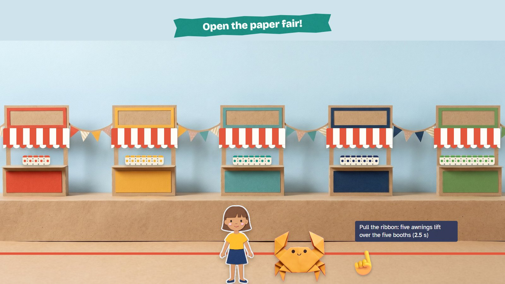

Five booths at the paper fair need their tickets. The child joins strips of tickets to make more, or tears some off along the dotted line to take them away, then says how many. Torn tickets go into Kebu's tray, so every ticket stays in view and the whole is never lost.
K–Grade 1 · ages 5–7 E09 Join and split + E10 Number bonds paper move: join, tear along the dotted line
Skill: Join and take away within 10, seeing the parts and the whole. Host: Kebu the crab. One activity is 5 rounds, about two minutes.
Tearing along a perforation, strips that click together, a booth that opens when its tickets are ready.
Sideways along the fair. When a booth is done the view slides (0.7 seconds) to the next; finished tickets stay on their counters.
Pull the ribbon: five striped awnings lift over the five booths (2.5 seconds).

Two strips of tickets, 3 and 2. The child pulls one to the other.
🔊 Join these tickets. How many now?
The sum is written only after the action (3 + 2 = 5).

Booth 1 has its 5, booth 2 its 7. The view has slid on to booth 3.
🔊 Your tickets are ready!
The view moves only after a booth is done. Finished tickets stay where they were put.

Nine tickets; two are torn off along the dotted line into Kebu's tray. The child taps 7.
🔊 Two leave. How many stay?

Booth 4: 10 tickets, 3 should leave. Four went into the tray and the child said 6. Everything stays.
🔊 Did that many tickets leave?
Every ticket is in view: 6 at the booth, 4 in the tray. The 6 stays marked.

One ticket goes back from the tray: 7 stay, 3 left. 10 − 3 = 7. The last booth asks for 6 and 4.
🔊 Keep every ticket. Change the split.
Fixed on the second try: done, but no first-try star.

The whole row of booths, each with its tickets. The child pulls the ribbon.
🔊 Open the paper fair!
Mock-ups: Gemini's paper pictures (scenes, friends, props) with the maths pieces drawn by code, as the app would draw them. In the app everything moves; here it stands still.
| Round | Task |
|---|---|
| 1 | Join 3 and 2: 5 |
| 2 | Join 4 and 3: 7 |
| 3 | Start with 9, tear off 2: 7 |
| 4 | Start with 10, tear off 3: 7 |
| 5 | Join 6 and 4: 10 |
This is one activity card. The skill's five steps (see it, fill one part, on your own, check it, word problem) are five different cards made from the same engine. Stars count first tries only: 5 of 5 = 3 stars, 4 = 2, 3 = 1.
| Mistake | Looks like | What happens (never red, never "wrong") |
|---|---|---|
| Took away the wrong number | 10 with four torn off: says 6 | "Did that many tickets leave?" One goes back |
| Gave a part, not the whole | joins 4 and 3, says 4 | "How many tickets are at the booth now?" |
| Counting all again | right, but slow | accepted; later the tip "Start from 4. Count on." |
| Mixing up join and tear | adds when the booth asks to take away | Kebu repeats the request with the tray in view |
Test robot: Works the answer out from the two strips in the question, joins or tears exactly that many, then taps the number. Once it tears one too many, to check the tip.